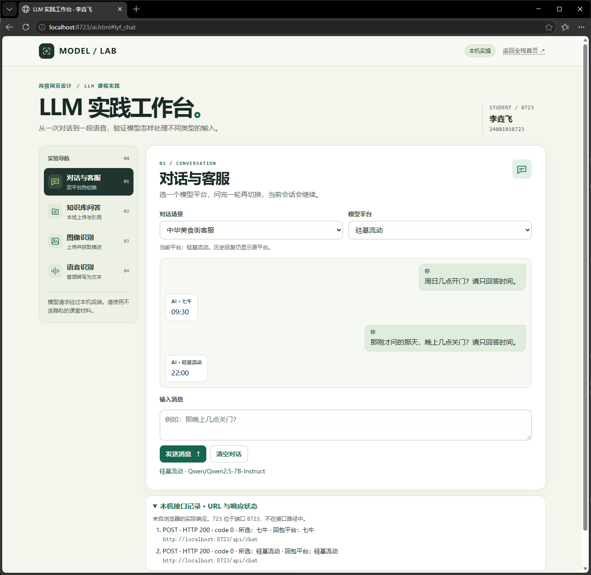
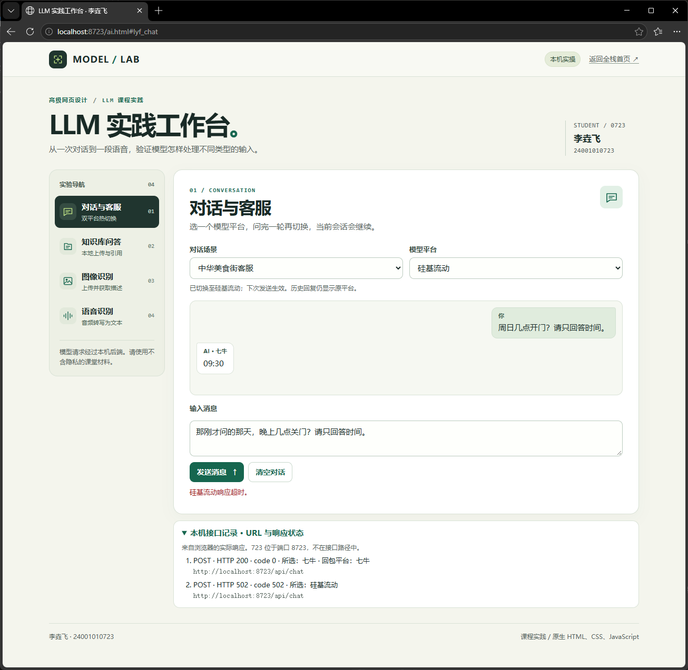

TRACE 01
先用七牛，再用硅基流动追问
同一个 Edge 标签页，同一个客服会话，切换时没有清空历史。第二次请求包含首轮提问及七牛的原始回复。
1 · 七牛
问：周日几点开门？请只回答时间。
答：09:30
qiniu/conatus-free
2 · 硅基流动
问：那刚才问的那天，晚上几点关门？请只回答时间。
答：22:00
Qwen/Qwen2.5-7B-Instruct
- 七牛回包 · HTTP 200 · code 0
POST http://localhost:8723/api/chat - 硅基流动回包 · HTTP 200 · code 0
POST http://localhost:8723/api/chat
同窗口连续成功 · 真实浏览器截图

历史记录（不作为本轮连续成功证据）
旧额度不足截图 ↗：选项虽为硅基流动，七牛回复是此前历史；红字是硅基流动额度不足，并非完成切换的成功证据。旧图不含浏览器地址栏。
11 月 23 日硅基流动单独补测 ↗：不是同一窗口里的两家连续成功，也不是本轮证据。
